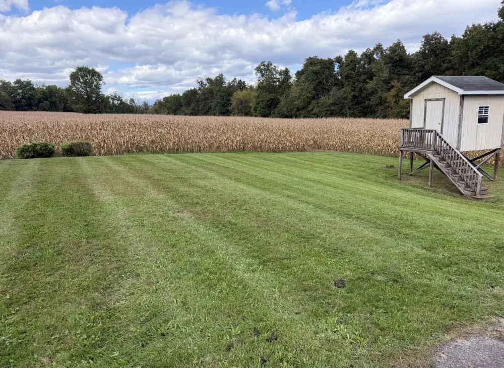
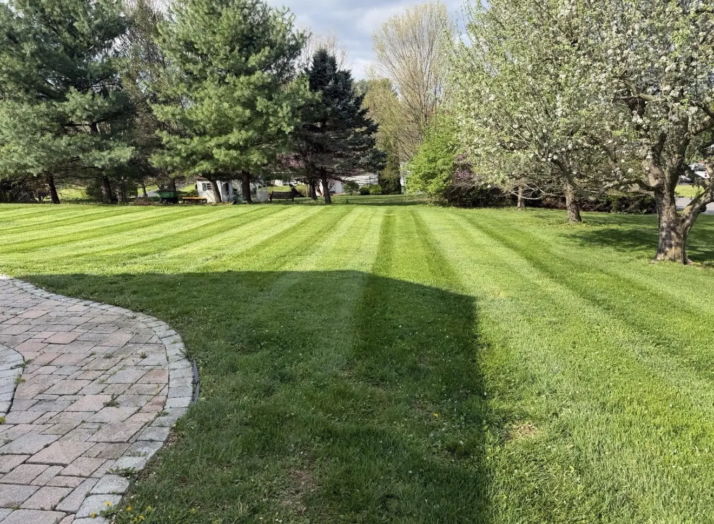
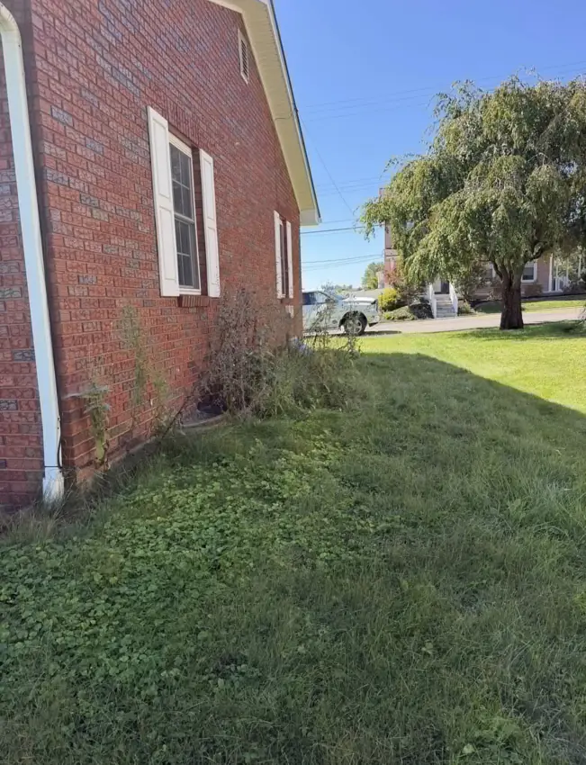
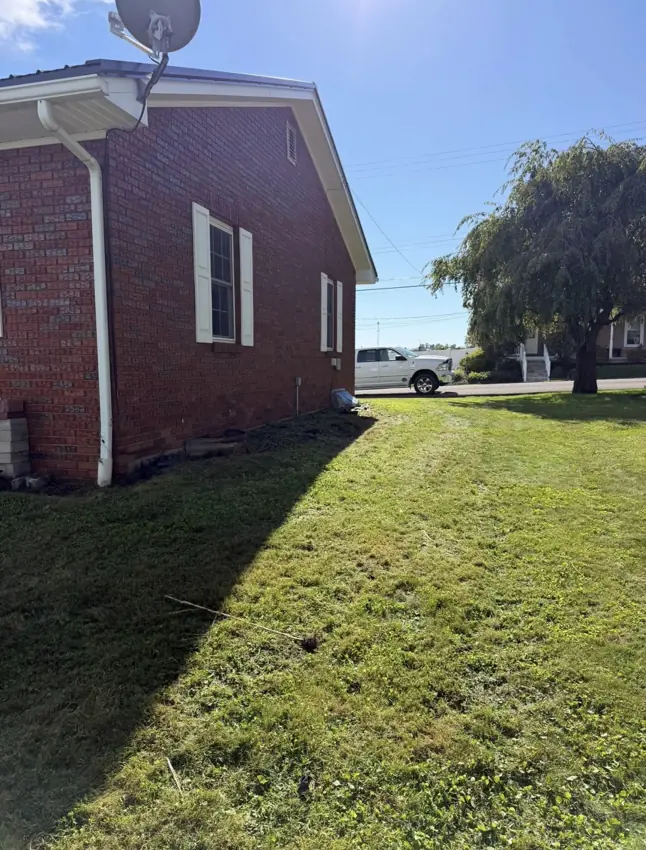
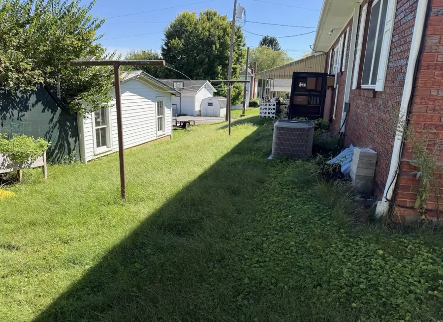
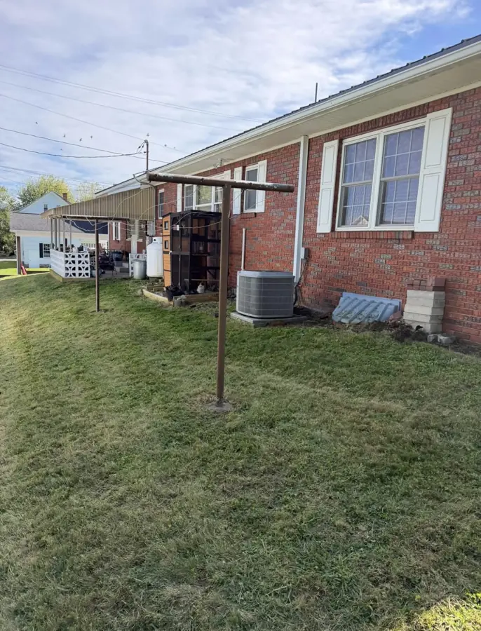
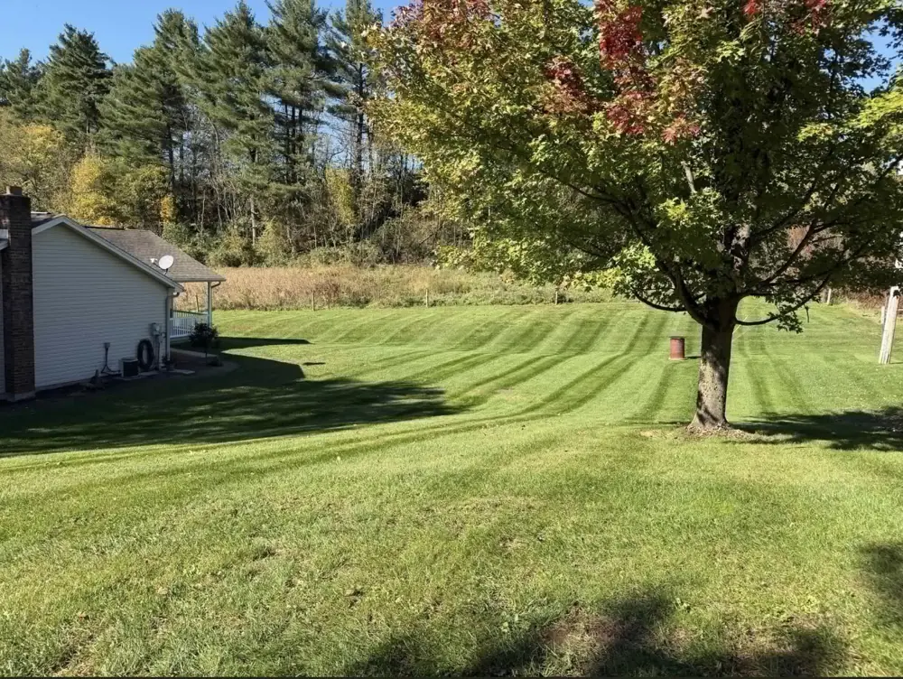
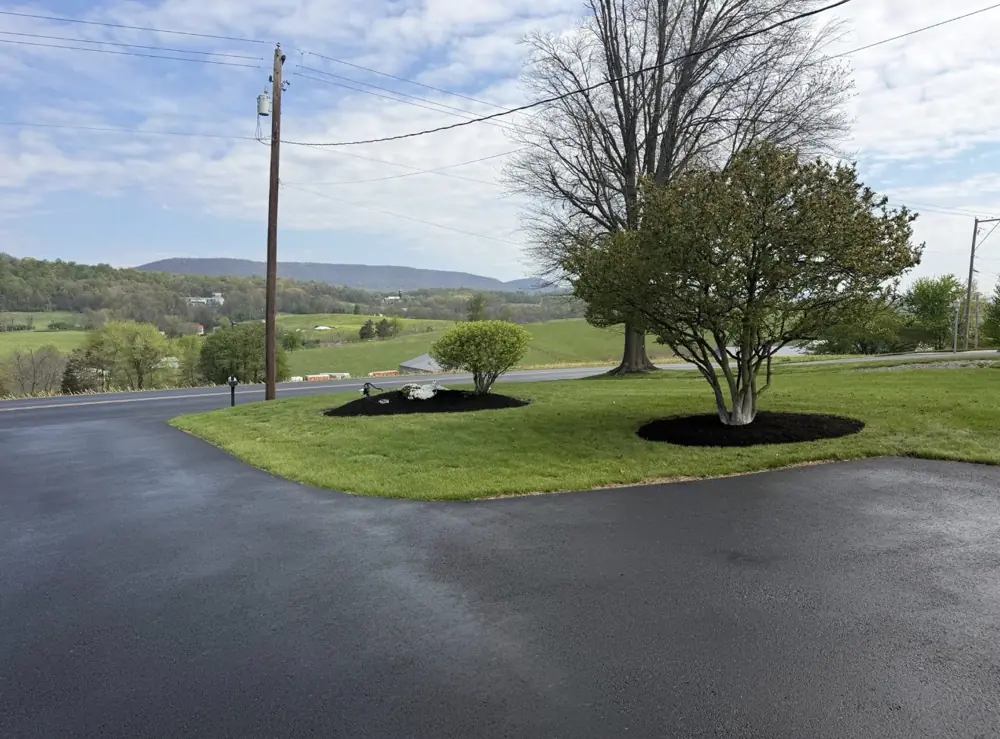
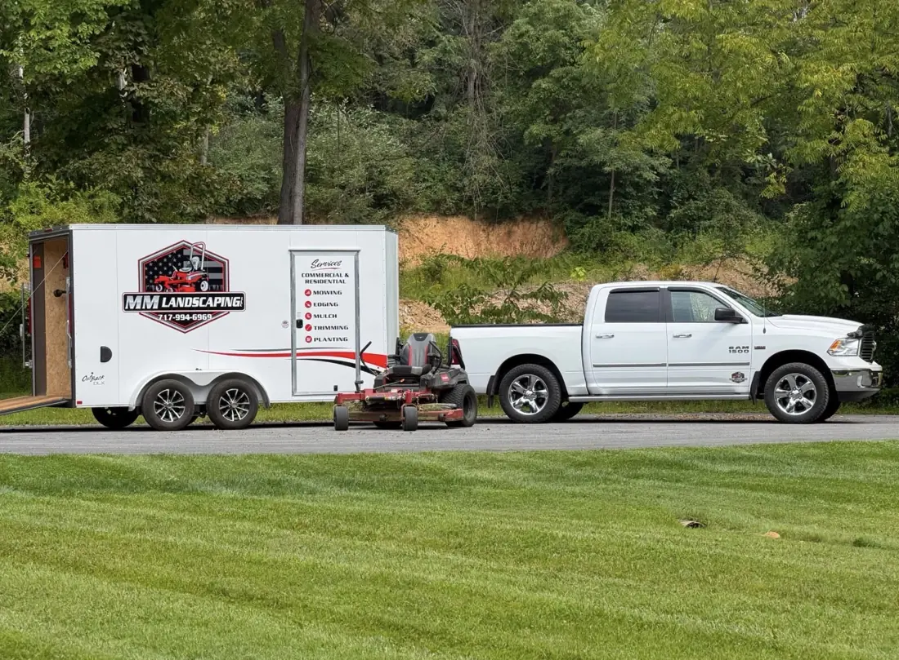

RESIDENTIAL & COMMERCIAL LANDSCAPING
Expert lawn care in Port Royal, Pennsylvania.
A lawn worth coming home to. From the first cut to the finishing touches, your property deserves the same care as our own.
Explore this website conceptMowing / Edging / Mulching / Trimming / Planting
CENTRAL PENNSYLVANIA
Residential & commercialBased in Port Royal, PAFour counties served
THE MM LANDSCAPING APPROACH
Good work.
Down to the details.
There is a difference between a lawn that is cut and a property that is cared for. At MM Landscaping, attention to detail matters, from a clean edge along your walkway to tidy planting beds and a beautifully mowed lawn.
Based in Port Royal, we serve residential and commercial properties across Snyder, Mifflin, Perry and Juniata counties.
Make this website yoursWHAT WE DO
Care for every corner.
Practical landscaping services for homes and businesses, from routine mowing to the finishing details.
Edging
Defined borders along walkways, driveways and planting beds.
Mulching
Fresh mulch for a clean, finished look around trees and shrubs.
Trimming
Tidy grass and vegetation around the places your mower cannot reach.
Planting
Thoughtful planting to complement your property and outdoor space.
THE DIFFERENCE IS IN THE DETAILS
See the transformation.
Real project photographs supplied for this concept. Compare the overgrown yard with the freshly cleared and cut result.


Side yard cleanup
Overgrown edges brought back under control. Different camera angles show the same side of the property.


Backyard cleanup
Grass and awkward edges trimmed around the house. Photos taken from different angles.


INTERACTIVE FEATURE DEMO
Build your mowing estimate.
Imagine a customer getting an instant ballpark estimate for their lawn, right from your website. Select the lawn size, frequency and optional extras to see the sample price change.
Demonstration only. The amounts are illustrative US dollar rates, not MM Landscaping's actual prices or a binding quote. No details are sent or collected.
Customize your lawn care
Illustrative estimate per visit
USDActual pricing would be set by the business after assessing the property. Larger properties, mulch and planting require a custom quote.
Add this feature to your website
LOCALLY BASED
Landscaping across central Pennsylvania.
From residential lawns in Port Royal to commercial grounds across the surrounding counties, MM Landscaping offers mowing and landscape maintenance close to home.
- Juniata County, PA
- Mifflin County, PA
- Perry County, PA
- Snyder County, PA
Business contact (shown for concept):
717-994-6969
meifertm@yahoo.com
MADE FOR MM LANDSCAPING
Make a great first impression, before the first cut.
This is a bespoke website concept prepared for MM Landscaping. Bring it to life with UK Trade Websites.
Make this website yours